Code
library(astsa)
tsplot(soi, ylab="", xlab="", main="Southern Oscillation Index", col=4)
text(1970, .91, "COOL", col=5)
text(1970,-.91, "WARM", col=6)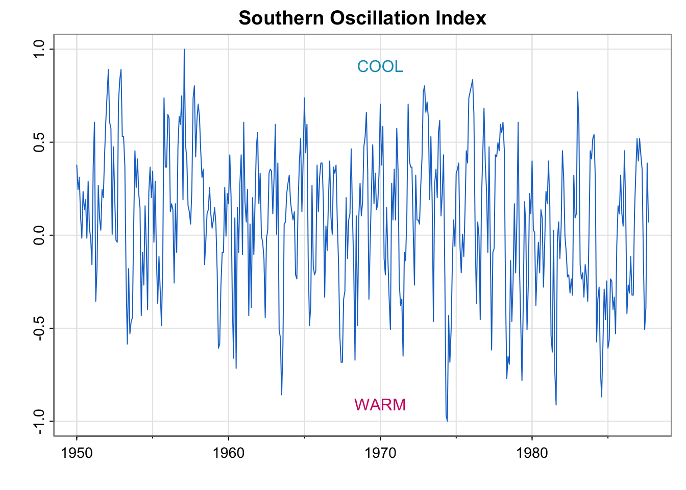
\[ \newcommand\E{{\mathbb{E}}} \]
We’ve been estimating trends and getting confused about stationarity :)
Next few weeks:
Create a folder somewhere on your computer called “Lecture6”.
Open R studio, and create a .qmd File and save inside the “Lecture6” folder as “Yourname_Lecture6.qmd”.
Create a header for Activity 1.
Choose two properties from:
Define the properties in symbols and words and describe why they are different. Make sure to put this in your quarto file!
When you’re done, share with another group. Put that group’s answer under another header.
library(astsa)
tsplot(soi, ylab="", xlab="", main="Southern Oscillation Index", col=4)
text(1970, .91, "COOL", col=5)
text(1970,-.91, "WARM", col=6)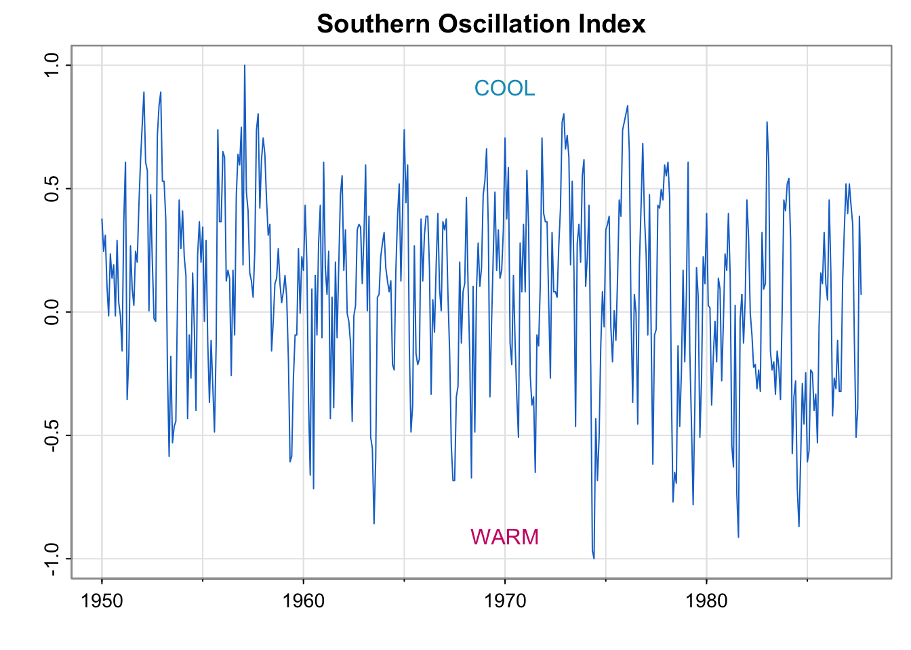
library(astsa)
#library(tidyverse)
##
w = c(.5, rep(1,11), .5)/12
soif = filter(soi, sides=2, filter=w)
tsplot(soi, col=astsa.col(4,.7), ylim=c(-1, 1.15))
lines(soif, lwd=2, col=4)
# insert
par(fig = c(.65, 1, .75, 1), new = TRUE)
w1 = c(rep(0,20), w, rep(0,20))
plot(w1, type="l", ylim = c(-.02,.1), xaxt="n", yaxt="n", ann=FALSE)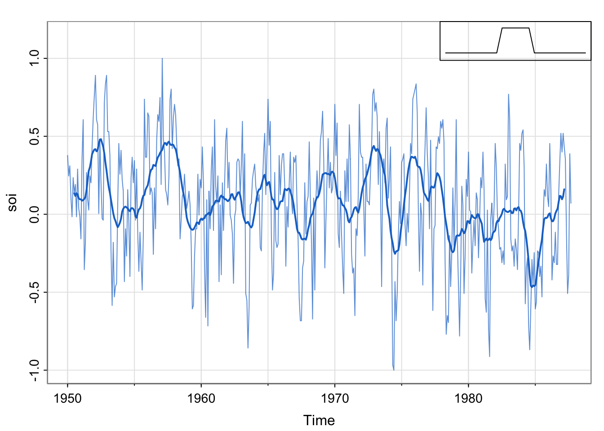
par(mfrow = c(1,1))
## Detrend
## Plot detrended
## acfslibrary(astsa)
library(tidyverse)── Attaching core tidyverse packages ──────────────────────── tidyverse 2.0.0 ──
✔ dplyr 1.1.4 ✔ readr 2.1.5
✔ forcats 1.0.0 ✔ stringr 1.5.1
✔ ggplot2 3.5.1 ✔ tibble 3.2.1
✔ lubridate 1.9.3 ✔ tidyr 1.3.1
✔ purrr 1.0.2
── Conflicts ────────────────────────────────────────── tidyverse_conflicts() ──
✖ dplyr::filter() masks stats::filter()
✖ dplyr::lag() masks stats::lag()
ℹ Use the conflicted package (<http://conflicted.r-lib.org/>) to force all conflicts to become errors##
w = c(.5, rep(1,11), .5)/12
soif = stats::filter(soi, sides=2, filter=w)
tsplot(soi, col=astsa.col(4,.7), ylim=c(-1, 1.15))
lines(soif, lwd=2, col=4)
par(fig = c(.65, 1, .75, 1), new = TRUE)
w1 = c(rep(0,20), w, rep(0,20))
plot(w1, type="l", ylim = c(-.02,.1), xaxt="n", yaxt="n", ann=FALSE)par(mfrow = c(1,1))
## Detrend
detrended <- soi-soif
## Plot detrended
tsplot(detrended)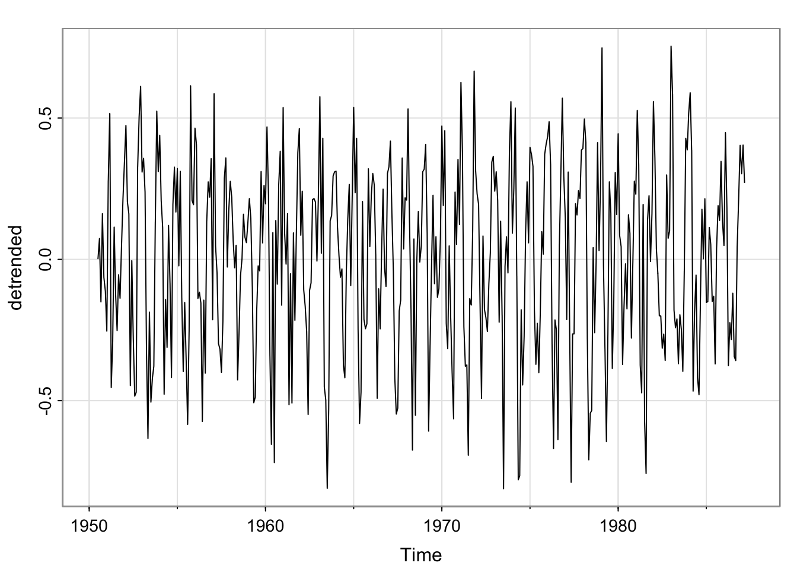
## acfs
acf1(soif, na.action = na.pass)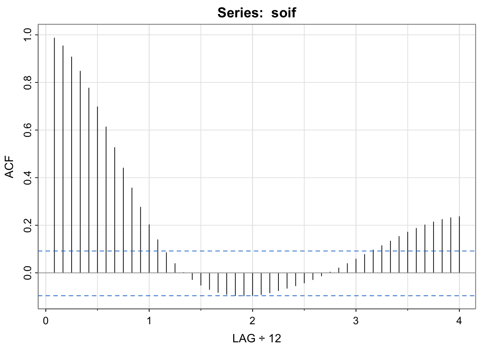
[1] 0.99 0.95 0.91 0.85 0.78 0.70 0.61 0.53 0.44 0.36 0.28 0.20
[13] 0.14 0.08 0.04 0.00 -0.03 -0.05 -0.07 -0.08 -0.09 -0.10 -0.10 -0.10
[25] -0.09 -0.08 -0.07 -0.06 -0.05 -0.04 -0.03 -0.01 0.00 0.02 0.04 0.06
[37] 0.08 0.10 0.11 0.13 0.15 0.17 0.19 0.20 0.21 0.22 0.23 0.24par(mfrow = c(2,1))
acf1(soi) [1] 0.60 0.37 0.21 0.05 -0.11 -0.19 -0.18 -0.10 0.05 0.22 0.36 0.41
[13] 0.31 0.10 -0.06 -0.17 -0.29 -0.37 -0.32 -0.19 -0.04 0.15 0.31 0.35
[25] 0.25 0.10 -0.03 -0.16 -0.28 -0.37 -0.32 -0.16 -0.02 0.17 0.33 0.39
[37] 0.30 0.16 0.00 -0.13 -0.24 -0.27 -0.25 -0.13 0.06 0.21 0.38 0.40acf1(detrended, na.action = na.pass)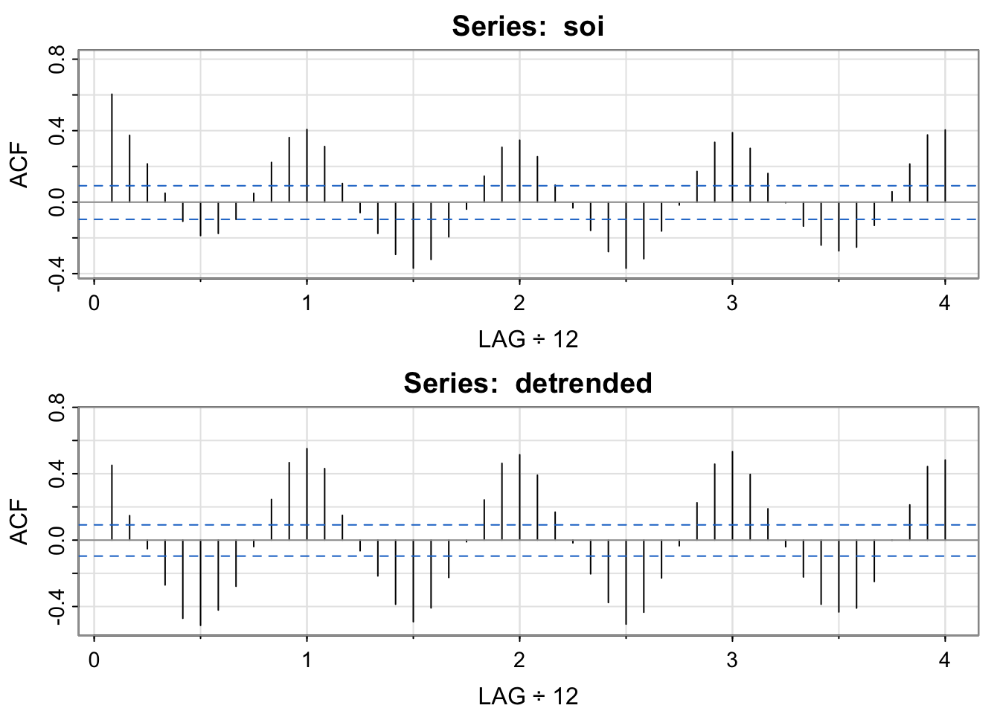
[1] 0.45 0.15 -0.05 -0.27 -0.47 -0.51 -0.42 -0.28 -0.04 0.24 0.47 0.55
[13] 0.43 0.15 -0.06 -0.22 -0.39 -0.49 -0.41 -0.23 -0.01 0.24 0.46 0.51
[25] 0.39 0.17 -0.02 -0.20 -0.38 -0.51 -0.43 -0.23 -0.03 0.22 0.46 0.53
[37] 0.40 0.19 -0.04 -0.22 -0.39 -0.43 -0.41 -0.25 0.00 0.21 0.44 0.48stats::filter not dplyr::filterThe soi and detrended soi have similar acfs that both appear to reveal the annual cycle, though the magnitude of the correlations are different. The moving average smoother shows the longer term oscillation. Each of these series has temporal structure (does not look like white noise).
\[ m_t = \sum_{j = -k}^k a_j x_{t-j} \]
Where \(x_t\) is any time series and the coefficients add to 1. How is this different from the “moving average model”?
What were the weights in the last example? How do you know? soif = stats::filter(soi, sides=2, filter=w) is portion of the code that computes the moving average. The weights are in the filter argument, so we need to look at what w is:
w [1] 0.04166667 0.08333333 0.08333333 0.08333333 0.08333333 0.08333333
[7] 0.08333333 0.08333333 0.08333333 0.08333333 0.08333333 0.08333333
[13] 0.04166667plot(-6:6, w, ylim = c(0, .1), ylab = "Weight", xlab = "distance from point we want the moving average estimate for")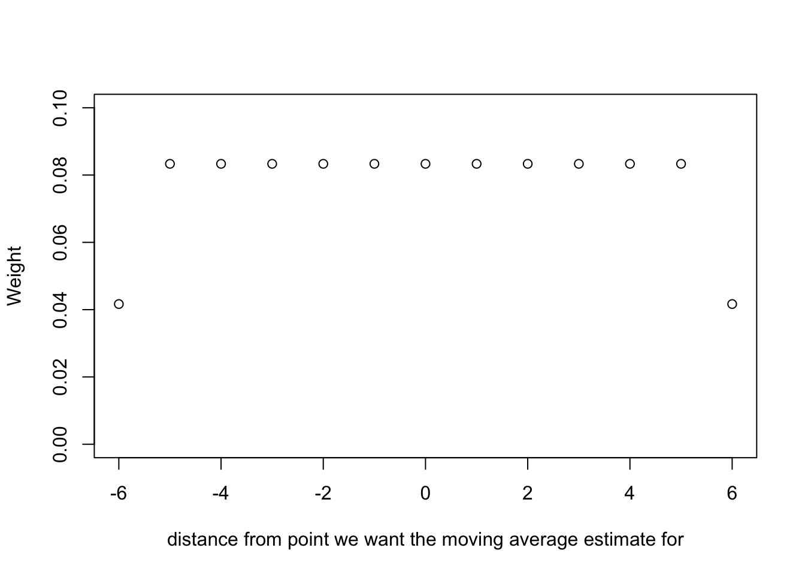
tsplot(soi, col=4)
lines(ksmooth(time(soi), soi, "normal", bandwidth=1), lwd=2, col=6)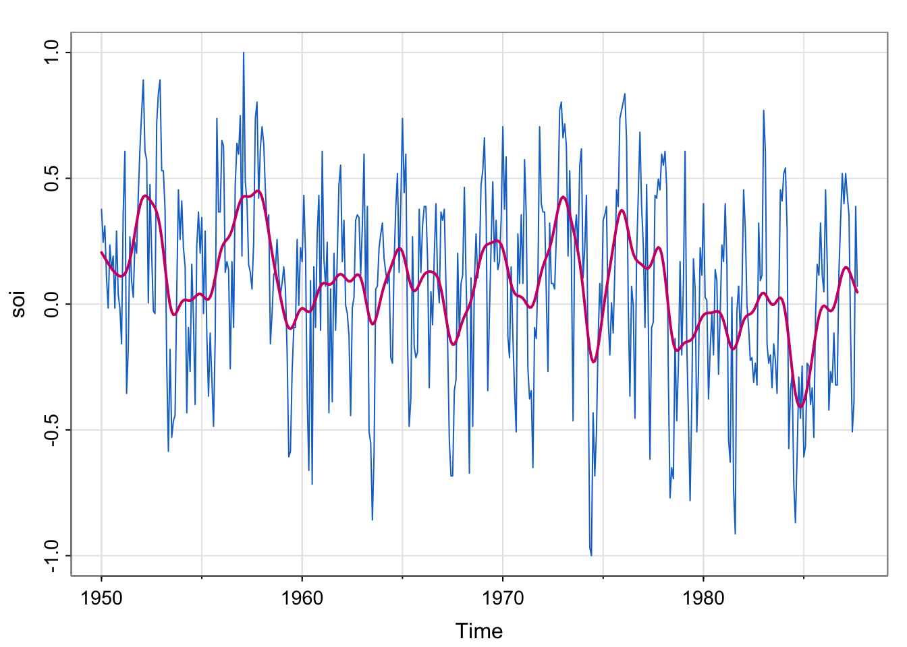
## detrend
## plot detrended
## acfstsplot(soi, col=4, ylim = c(-1, 1.15))
lines(ksmooth(time(soi), soi, "normal", bandwidth=1), lwd=2, col=6)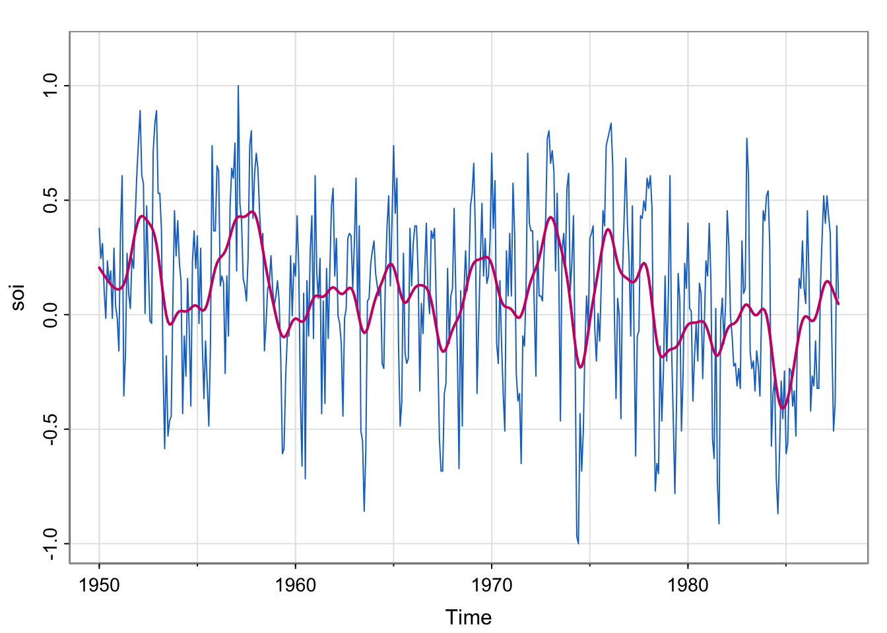
## change bandwidth
tsplot(soi, col=4, ylim = c(-1, 1.15))
lines(ksmooth(time(soi), soi, "normal", bandwidth=2), lwd=2, col=6)
tsplot(soi, col=4, ylim = c(-1, 1.15))
lines(ksmooth(time(soi), soi, "normal", bandwidth=0.5), lwd=2, col=6)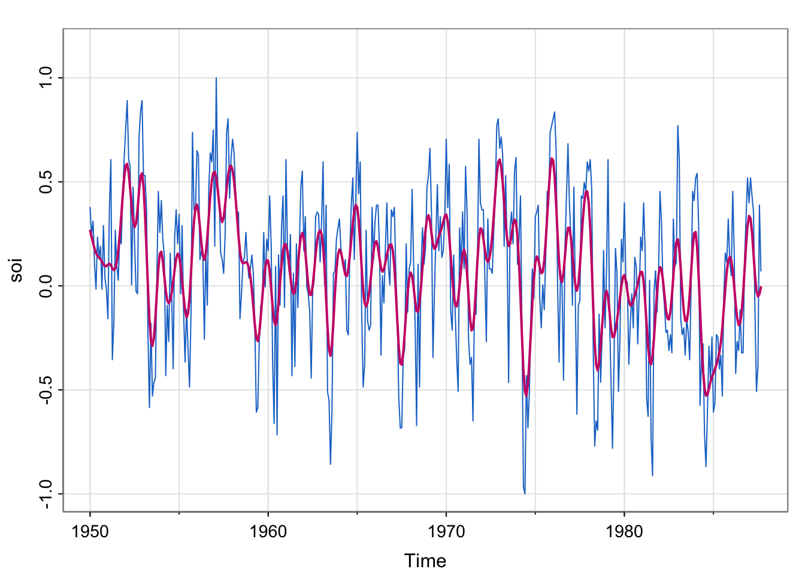
## Detrend
soi_ksmooth <- ksmooth(time(soi), soi, "normal", bandwidth=1)
detrended <- soi-soi_ksmooth$y
## Plot detrended
tsplot(detrended)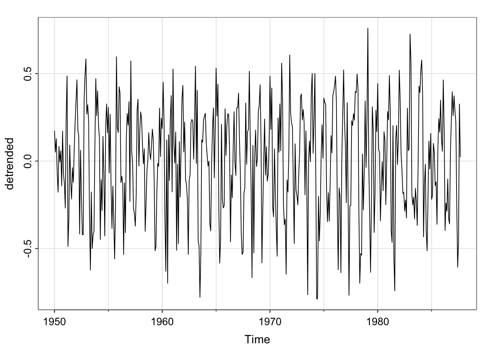
## acfs
acf1(soi_ksmooth$y, na.action = na.pass)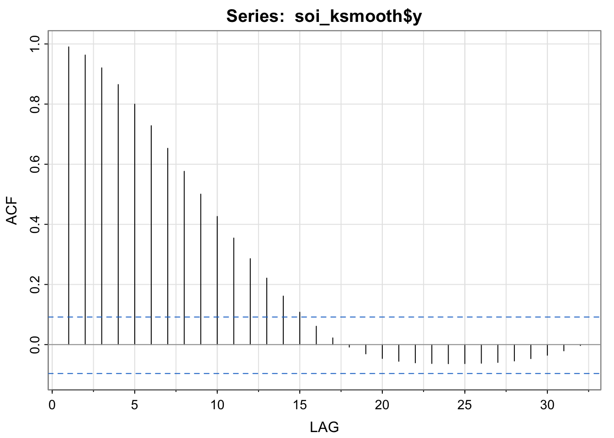
[1] 0.99 0.96 0.92 0.86 0.80 0.73 0.65 0.58 0.50 0.43 0.35 0.29
[13] 0.22 0.16 0.11 0.06 0.02 -0.01 -0.03 -0.05 -0.06 -0.06 -0.06 -0.06
[25] -0.06 -0.06 -0.06 -0.05 -0.05 -0.04 -0.02 0.00par(mfrow = c(2,1))
acf1(soi) [1] 0.60 0.37 0.21 0.05 -0.11 -0.19 -0.18 -0.10 0.05 0.22 0.36 0.41
[13] 0.31 0.10 -0.06 -0.17 -0.29 -0.37 -0.32 -0.19 -0.04 0.15 0.31 0.35
[25] 0.25 0.10 -0.03 -0.16 -0.28 -0.37 -0.32 -0.16 -0.02 0.17 0.33 0.39
[37] 0.30 0.16 0.00 -0.13 -0.24 -0.27 -0.25 -0.13 0.06 0.21 0.38 0.40acf1(detrended, na.action = na.pass)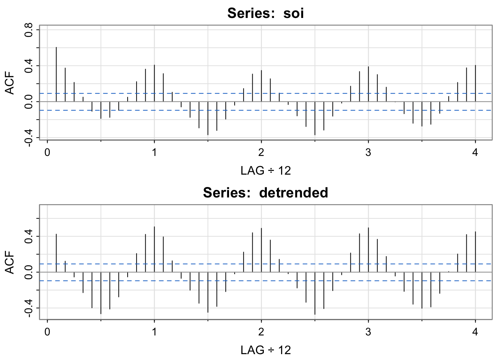
[1] 0.42 0.12 -0.05 -0.23 -0.40 -0.46 -0.41 -0.28 -0.05 0.21 0.42 0.51
[13] 0.39 0.13 -0.07 -0.20 -0.35 -0.45 -0.38 -0.22 -0.02 0.22 0.44 0.49
[25] 0.36 0.14 -0.02 -0.18 -0.34 -0.47 -0.41 -0.21 -0.03 0.21 0.43 0.49
[37] 0.37 0.17 -0.04 -0.21 -0.36 -0.40 -0.39 -0.24 0.01 0.20 0.42 0.45A kernel is a moving average smoother that uses a weight function (the kernel) to average the observations: \[ m_t = \sum_{i = 1}^n w_i(t)x_{t_i} \] Where the weight function is
\[ w_i(t) = K \left ( \frac{t-t_i}{b}\right ) / \sum_{k = 1}^n K \left(\frac{t-t_k}{b} \right ) \] Where \(K(z) = \exp(-z^2/2)\) (anyone recognize this?)
How does this compare with the Moving Average smoother?
Since time is in years here, and we would expect yearly cycles, we use a bandwidth of 1 to approximately smooth over the year.
So, bandwidth does control the degree of smoothness, but the actual value depends on the unit of time measurement (years, months, days, etc.)
If the data were monthly, we would use a bandwidth of 12:
SOI = ts(soi, freq = 1) ## convert to monthly
tsplot(SOI) ## note the x-axis
lines(ksmooth(time(SOI), SOI, "normal", bandwidth = 12), lwd = 2, col = 4)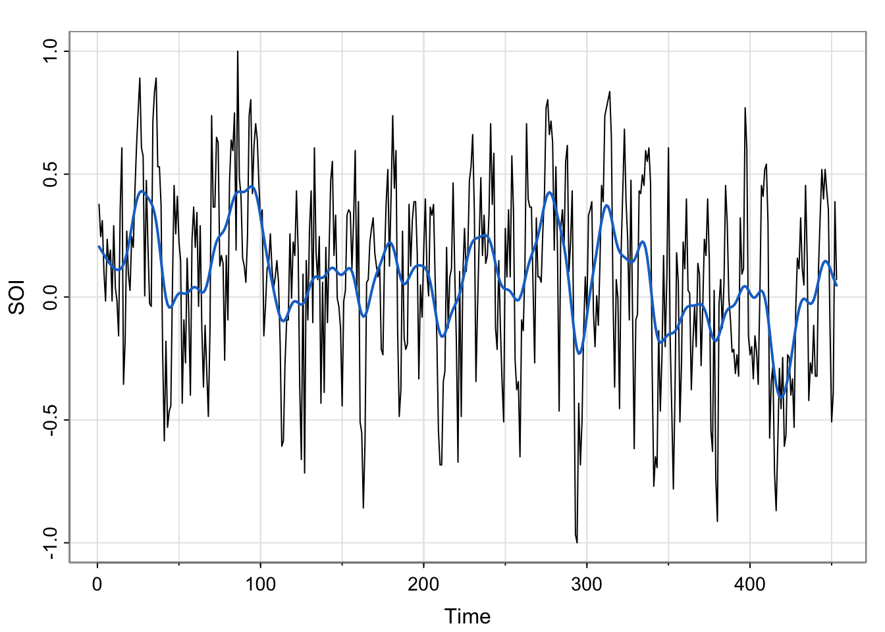
tsplot(soi, col=astsa.col(4,.6))
lines(lowess(soi, f=.05), lwd=2, col=4) # El Niño cycle
# lines(lowess(soi), lty=2, lwd=2, col=2) # trend (with default span)
#- or -#
##-- trend with CIs using loess --##
lo = predict(loess(soi ~ time(soi)), se=TRUE)
trnd = ts(lo$fit, start=1950, freq=12) # put back ts attributes
lines(trnd, col=6, lwd=2)
L = trnd - qt(0.975, lo$df)*lo$se
U = trnd + qt(0.975, lo$df)*lo$se
xx = c(time(soi), rev(time(soi)))
yy = c(L, rev(U))
polygon(xx, yy, border=8, col=gray(.6, alpha=.4))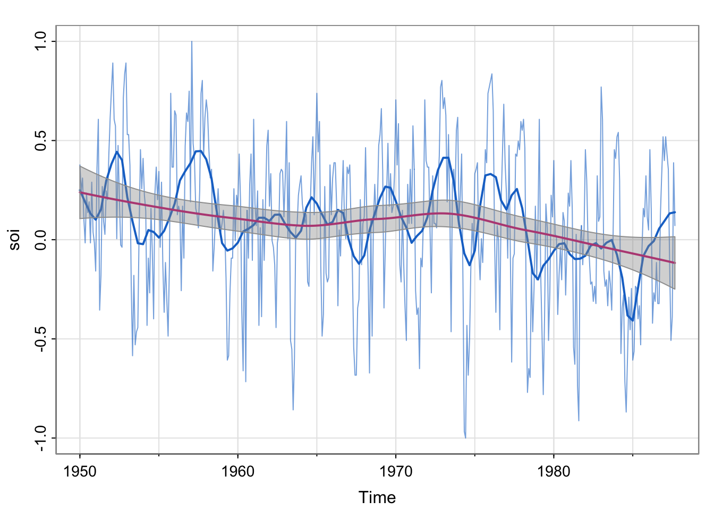
## detrend wrt "linear" trend
## detrend wrt "seasonal" trend
## detrend wrt bothlowess specifies the f parameter, which is called the bandwidth . What is the name of argument that controls the the span parameter for the function . What does the span parameter control?tsplot(soi, col=astsa.col(4,.6))
lines(lowess(soi, f=.05), lwd=2, col=4) # El Niño cycle
# lines(lowess(soi), lty=2, lwd=2, col=2) # trend (with default span)
#- or -#
##-- trend with CIs using loess --##
lo = predict(loess(soi ~ time(soi), span = 1), se=TRUE)
trnd = ts(lo$fit, start=1950, freq=12) # put back ts attributes
lines(trnd, col=6, lwd=2)
L = trnd - qt(0.975, lo$df)*lo$se
U = trnd + qt(0.975, lo$df)*lo$se
xx = c(time(soi), rev(time(soi)))
yy = c(L, rev(U))
polygon(xx, yy, border=8, col=gray(.6, alpha=.4))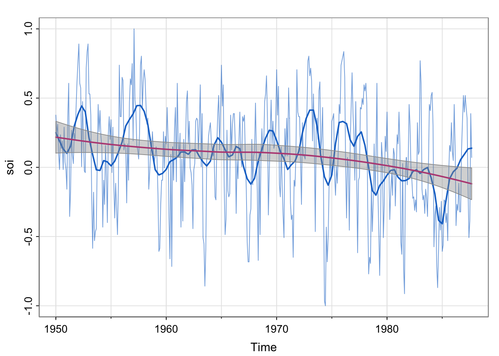
## detrend wrt "linear" trend
tsplot(soi - trnd)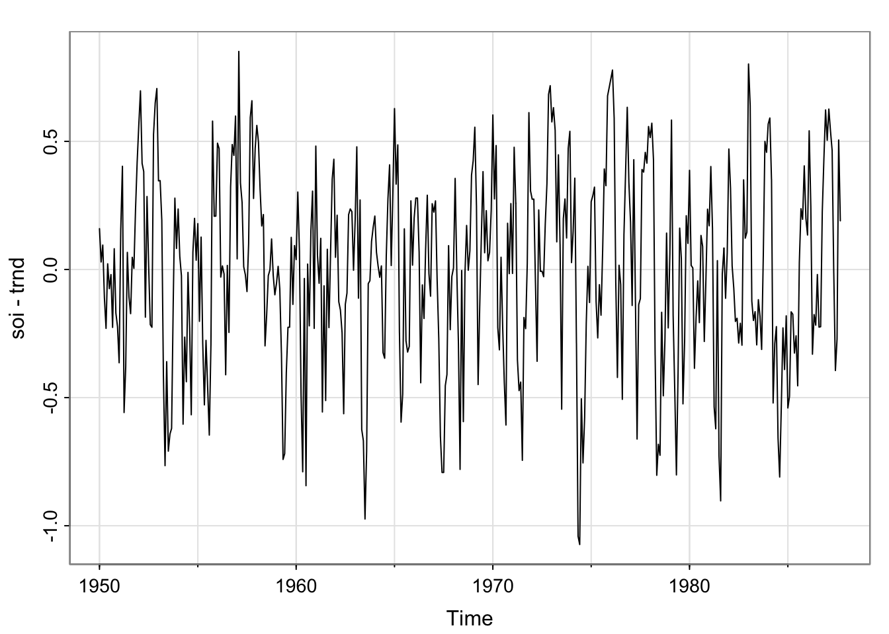
## detrend wrt "seasonal" trend
smoother <- lowess(soi, f=.05)
tsplot(soi - smoother$y)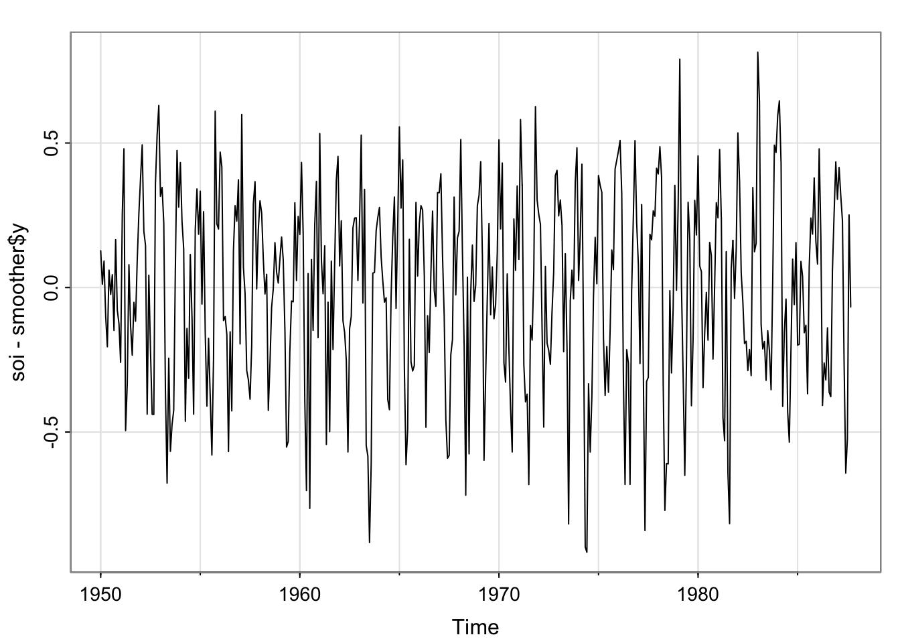
## detrend wrt both
tsplot(soi- trnd - smoother$y)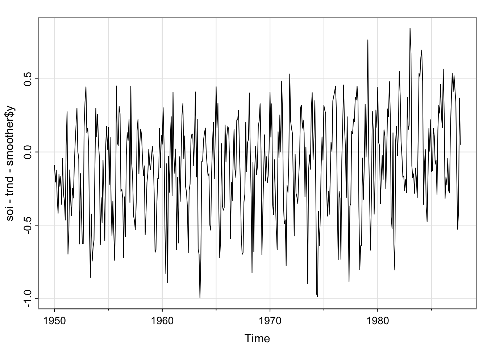
Notice that there are two trends here. Describe the patterns in each. There appears to be an approximately linear decreasing trend, and a trend which is similar to the moving average and kernel smoother. The linear-ish trend has a confidence band around it (have we seen that before?)
Note that the two smoother estimates use different functions. lowess specifies the f parameter, which is called the bandwidth . What is the name of argument that controls the the span parameter for the function . What does the span parameter control?
Looking at the documentation for loess, we see the function has an argument called span, and the defualt is 0.75. Note that the book is incorrect that the default is 2/3. The span controls the degree of smoothing. We will talk about what that means.
Compare the plot to the smoother estimates we have plotted for the various activities.